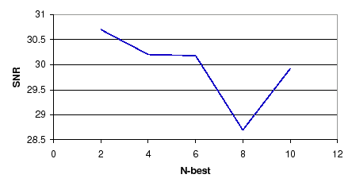

Next: Signal Output Algorithms Analysis Up: Acoustic Beamforming Experiments Previous: Reference Channel Estimation Analysis Contents
The post-processing module (explained in 5.2.3) includes the noise thresholding algorithm and the TDOA values stability algorithm using Viterbi decoding. These do a post-processing of the computed TDOA values to select the final delays to be applied to each signal prior to doing the sum of the different channels. The noise thresholding algorithm detects those TDOA values that most probably come from a silence region and substitutes its value by the previous, more stable, delay value. It does it by finding the threshold that cuts 10% of the TDOA values as noise. The TDOA stability algorithm uses a double-pass Viterbi algorithm to select the optimum among all possible combinations of N-best computed TDOA values.
These modules are the second version of the initial algorithms implemented and presented in the RT05s system explained in Anguera, Wooters, Peskin and Aguilo (2005). On one hand, the initial algorithm for the noise thresholding used a fixed threshold set by hand (using development data) for all meetings. This caused problems in very noisy shows, as it will be shown in the results, where it is used as a comparison with a threshold = 0.1 over the GCC-PHAT value for each frame (whose values can range from 0 to 1). On the other hand, the first version of the stability 1-best selection algorithm used a simple distance based rules algorithm to either use the 1st-best value or some other value in the N-best list. If the difference between the TDOA value of the first element in the N-best TDOA list for a particular frame and the selected value for the previous frame was greater than a threshold it was searched in the N-best list if there was any other element which was closer, in which case that was the one selected.
Table 6.7 shows results for the RT06s system with the latest version of both algorithms presented, and compares them to using the RT05s versions or not using any algorithm (for either algorithm and in overall).
The development set SNR using the RT06s version of both algorithms is better than the RT05s algorithms combination, but is worse than not using any continuity algorithm or not using post-processing at all. The evaluation set SNR for RT06s, though, outperforms all other cases. As for the DER, on the development set, the RT06s system outperforms all other combinations. On the test set results are slightly worse on the proposed RT06s algorithms than not using anything or doing a fixed noise threshold. In overall, the RT06s post-processing algorithm outperforms the lack of postprocessing in am 8.3% relative on the development set, while it gets a 2.9% worse in the evaluation set.
The noise thesholding algorithm intends to be a simple speech/non-speech detector at the beamforming level. Initial tests were performed to include a more sophisticated detector but it was finally not used in any of the systems. On one hand the results did not reflect the improvements expected. On the other hand the beamforming module was pretended to be independent of any training data, so that it could be applied to any circumstance, which the speech/non-speech detector at the time did not allow.
The change of the noise thresholding to a percentage-based threshold in RT06s versus using a fixed threshold slightly benefits the results of DER in the development set while it gets worse in the test set. Such new algorithm was implemented given the problems obtained in processing very noisy meetings (as it was the case for the LDC meetings) which the RT05s algorithm labelled many frames as non-speech.
Figure 6.4 shows the SNR obtained for the development set by sweeping the percentage of frames with lowest GCC-PHAT values considered as noise. After 10% of the frames are selected the SNR results are very stable. This was the selected value for the RT06s system as it modifies as few frames as possible while achieving good performance. If instead of a 10% threshold, the maximum SNR point has been selected (20%) the results for the SNR and DER are shown in table 6.8:
| ||||||||||||||||||||
By using the optimum value for the SNR in the development set it is observed that the evaluation set obtains a slightly worse SNR but both the dev and eval sets obtain an important improvement in DER. This optimum value was not found during the development of the RT06s system as the development set was slightly different than the one used in these experiments. These scores demonstrate the better performance of the noise thresholding using a percentage instead of using a fixed threshold or no thresholding, shown in table 6.7 above.
The use of the TDOA-selection continuity algorithm is justified by the results in table 6.7. Results on DER comparing it to the RT05s algorithm results show a 6.9% relative improvement on the development set and a more modest 1% relative on the test set. Comparing it to not doing anything obtains similar results in the development set but a 3% relative improvement in the test set. This algorithm though requires the computation of a double Viterbi decoding of the multiple TDOA values, which can take a long time to compute, depending on the number of microphones to process. Although results are beneficiary to the system, it is doubtful if it is feasible to be used in a realtime application.
To further study the effect of the double-Viterbi decoding, the behavior of three parameters in the algorithm are studied with respect to the SNR in the development set. These are the weights used to enhance the transition probabilities in each of the 2 Viterbi decodings levels (see section 5.2.3 for more details) and the number of initial N-best TDOA values given to the algorithm to select from. Table 6.5 shows the SNR for the development set by changing the relative weights of either the first or second Viterbi steps. The default value for both variables taken at 25 is a relative maximum of both curves (very similar to each other). Other values around the default ones obtain better SNR. For both cases in table 6.9 the SNR and DER for the default RT06s case and for cases when either weight is set to 15 are shown.
| |||||||||||||||||||||||||
By selecting an alternative value for the weights in the first Viterbi decoding it obtains an improvement in the SNR of both devel and eval sets and DER in the development set, but the DER gets worse for the evaluation set. On the contrary, by using the alternative weight in the second Viterbi only the SNR in the development set improves. It is desirable to maintain both weights to the same value to avoid over-tuning to the data, which in average is better to be at 25, as set for the RT06s evaluation.
The third parameter to analyze in the algorithm is the number of N-best values to be considered by the algorithm when selecting the optimum TDOA value. The first Viterbi step does a local selection within each channel from the N-best possible TDOA values to the 2-best, which then are considered by the second Viterbi in a global decoding among all TDOA values from all channels. The number of possible initial TDOA values is a parameter that describes how many possible peaks in the GCC-PHAT function have to be considered by the first Viterbi. These maxima might represent cases with multiple speakers in overlap or single speakers with impulsive noises. The selection of the right number of initial N-best values needs to account for concurrent acoustic events while avoiding false peaks in the GCC-PHAT function to be selected.
|  |
Figure 6.6 shows the SNR for the development set by selecting from 2 to 10 initial N-best values. The RT06s system default value of 4 obtains a stable SNR behavior (not much change is seen in SNR around it). Choosing only the 2-best peaks of the TDOA values gives a slightly better SNR in the development set, and therefore it was compared to 4 by computing the SNR and DER on the test set, and shown in table 6.10:
| ||||||||||||||||||||
Although the SNR for the development set is slightly better using 2-best than using 4-best, the DER for such set behaves very poorly compared to the RT06s system. The SNR for the eval set is worse than in the default system, although the DER slightly outperforms the default. The optimum value for diarization is therefore left at 4-best TDOA values.
user 2008-12-08